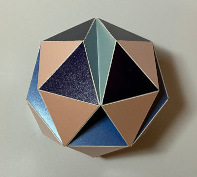

Tri-Composite of Heptagonal Antiprisms

In February 2026 I was experimenting with heptagons and Jim McNeill pointed out the self augmented heptagonal antiprism on his page . When I analysed this model, I noticed that several faces end up at the same spot if you rotate an n-gonal antiprism 120° around an axis through two opposite triangles. This way a new set up polyhedra can be defined. I refer to these as tri-composites of antiprisms, TCA in short. The one shown above is based on the regular heptagon. The symmetry of the polyhedron belongs to the algebraic group D3xI, which means there is a 3-fold symmetry axis, three mirror planes that share the axis and three half-turns, for which the axes are in a plane orthogonal to the 3-fold axis.
For the model on his website Jim McNeill excavated one whole ring of a base antiprism, while I only used with a compound of three antiprisms. For my model it means that one could continue adding antiprisms and hence in the model above one can find several triplets of edges that are lying in an regular heptagon. Two that share a vertex and one on the opposite side. This is just a logical consequence of the general property for n-gonal antiprisms mentioned above. What is remarkable though is that the acute angles are equal to the angle of a {7/3} heptagram. This is something that Jim observed and he mentioned that this only seems to happen for the heptagon, see the image below.

The model was built in February 2026 and the edge length is 3.5 cm.
Links
Last Updated
2026-03-17